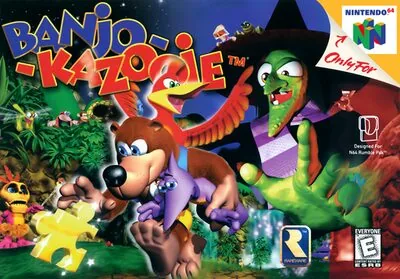
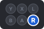
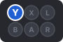
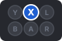
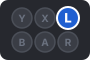
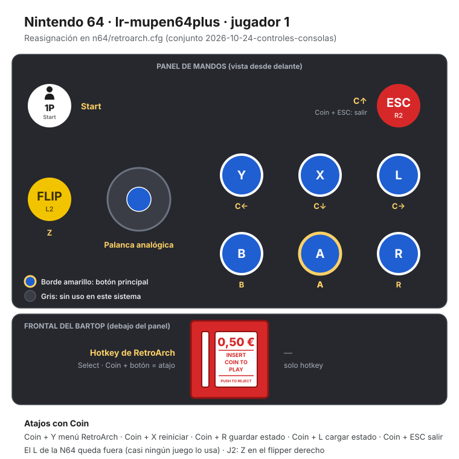

Nintendo 64
Banjo-Kazooie
- Año: 1998
- Desarrollador: Rareware
- Género: Plataformas
- Jugadores: 1 jugador
La fea bruja Gruntilda pregunta a su caldero mágico quién es la más bella, y la respuesta no le gusta: es Tooty, la hermana de Banjo. Cuando Tooty desaparece, Banjo y su amiga Kazooie, la pájara que lleva en la mochila, salen a buscarla. Los mundos son enormes y están llenos de cosas que recoger: notas musicales, piezas de puzle (jiggies), fichas de Mumbo y jinjos; algunas están escondidas y otras exigen resolver puzles.
Controles
Mando de N64 adaptado al panel. El joystick mueve la palanca analógica.
| Panel | Juego |
|---|---|
 | B |
 | A |
 | R |
 | C ← |
 | C ↓ |
 | C → |
 | C ↑ |
| Z | |
 | Start |
 + + | Salir del juego |
El panel en Nintendo 64


Longplay

Partida completa de la versión Nintendo 64 (303 min), de N64 Archive: Nintendo 64 Longplay: Banjo-Kazooie.